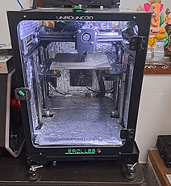

Printer Connection
Connect UB Slicer to your Unbound printer to see it here and send prints straight to it.

IP 192.168.1.50
Not connected
Printer: Unbound3D Hercules

Physical Printer
Save Machine as
Host Type
Hostname, IP or URL
API Key / Password
TestOK
✓ Connection works
Connect your printer
- Find the printer's address: on the printer's touch screen open Menu → System (or Network) and note the IP, for example
192.168.1.50. - On the Prepare tab, choose your printer (e.g. Unbound3D Hercules) and click the connection icon next to Printer.
- Save Machine as: a name you will recognise, e.g.
Hercules - Office. Host Type:Octo/Klipper. - Hostname, IP or URL: the printer's IP. API Key / Password: leave empty on your own network.
- Click Test, then OK. The printer appears in the printer list and on this tab.
The computer must be on the same network as the printer. If Test fails, try the IP with :7125 at the end.
Printing through UBconnect from anywhere? Fill in the three boxes shown in UBconnect → Print from Orca instead.